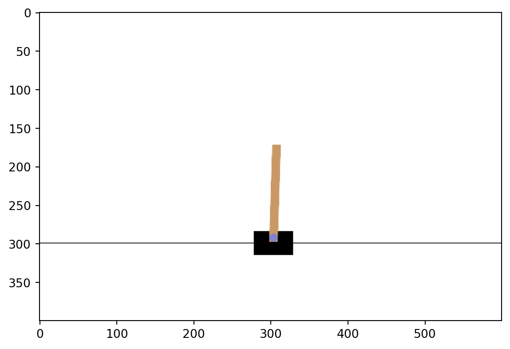
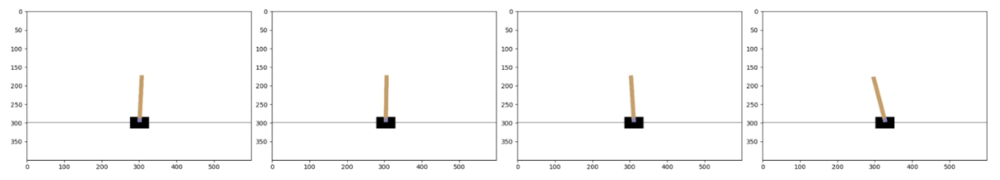

No matter the environemnt, the Gymnasium library offers an unified interface for interaction. This interface includes functions and methods to:
Initialize environment
Visually represent environment
Execute actions
Observe outcomes
Let’s explore them using the CartPole environment.
Interacting with Gymnasium environments
In the following snippet we:
Create the environment, by calling the gym.make function and passing the id of the environment CartPole along with render_mode equals rgb_array allowing us to visualize the states using matplotlib. Other render modes exist.
Initialize the environment and return the initial observation along with some auxiliary information, by calling the method env.reset. The seed argument can be used to ensure reproducibility.
Print the intial observation.
import gymnasium as gymenv = gym.make('CartPole', render_mode='rgb_array')state, info = env.reset(seed=42)print(state)
[ 0.0273956 -0.00611216 0.03585979 0.0197368 ]
/opt/hostedtoolcache/Python/3.12.12/x64/lib/python3.12/site-packages/gymnasium/envs/registration.py:531: UserWarning: WARN: Using the latest versioned environment `CartPole-v1` instead of the unversioned environment `CartPole`.
logger.warn(
The observation as an array represents the environment state, including the position and velocity of both ther cart and the pole.
For other environments, we’ll need to consult the Gymnasium Documentation to understand the details of their states.
Visualizing the state
To get a visual representation of the state, the env.render method returns the state image that we can visualize using the plt.imshow function. Then, by calling plt.show, a snapshot of the environment will be displayed.
import matplotlib.pyplot as pltdef render(): state_image = env.render() plt.imshow(state_image) plt.showrender()

Performing actions
In the CartPole environment there are two possible actions:
\(0:\) moving the cart to the left
\(1:\) moving the cart to the right
To execute an action we call env.step and pass the chosen action. This method return five values:
The next state
The reward received
A terminated signal, indicating wether the agent has reached a terminal state such as achieving the goal or loosing
A truncated signal, showing wether a condition like a time limit has been met
Info which provides auxiliary diagnostic information useful for debugging
We omit truncated and info in our script for simplicity and we print the first three return values after moving the cart to the right.
We see the state changed and the agent received a reward of \(1\), since it hasn’t reached a terminal state yet.
Interaction loops
Suppose we want to keep pushing the cart to the right until a termination condition is met and monitor the environment. We add the previous code in a while loop and render the environment at each iteration.
whilenot terminated: action =1# Move to the right state, reward, terminated, _, _ = env.step(action) render()

Here are some chosen plots showing the cart movements to the right.